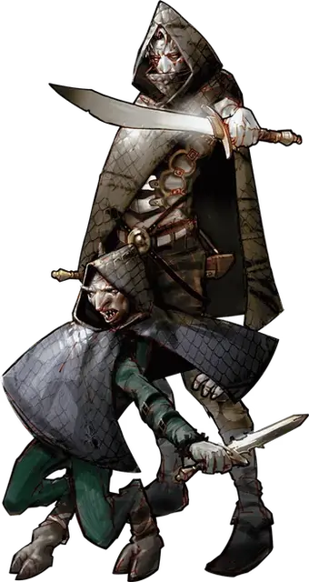

Дарклинг
Darkling
Маленькая Фея, хаотично-нейтральная

Класс Доспеха 14 (кожаный доспех)
Хиты 13 (3к6 + 3)
Скорость 30 футов
| мод | спас | ||
|---|---|---|---|
| СИЛ | 9 | −1 | −1 |
| ЛОВ | 16 | +3 | +3 |
| ТЕЛ | 12 | +1 | +1 |
| мод | спас | ||
|---|---|---|---|
| ИНТ | 10 | +0 | +0 |
| МДР | 12 | +1 | +1 |
| ХАР | 10 | +0 | +0 |
Навыки Акробатика +5, Восприятие +5, Обман +2, Скрытность +7
Чувства слепое зрение 30 футов, тёмное зрение 120 футов, пассивное Восприятие 15
Языки Сильван, Эльфийский
Опасность 1/2 (100 опыта)
Бонус мастерства +2
Среда обитания Болото, Город, Лес, Подземье
Особенности
Вспышка смерти. . Когда дарклинг умирает, немагический свет испускается из него в радиусе 10 футов, пока его тело и снаряжение, кроме металлических или магических предметов, сгорают дотла. Любое существо в этой области, видящее яркий свет, должно совершить спасбросок Телосложения Сл 10 или ослепнуть до конца своего следующего хода.
Чувствительность к солнечному свету. Будучи на ярком свете, дарклинг получает помеху на броски на попадание, а также на проверки Мудрости (Восприятие), основанные на зрении.
Действия
Кинжал. . Рукопашная или Дальнобойная атака оружием: +5 к попаданию, досягаемость 5 футов или дистанция 20/60 футов, одна цель. Попадание: 5 (1к4+3) колющего урона. Если у дарклинга преимущество на бросок на попадание, то атака дополнительно наносит 7 (2к6) колющего урона.
Описание
Древние легенды рассказывают о фее Благого Двора, который предал Королеву Лета. Его настоящее имя было вычеркнуто из истории, но в рассказах его называют Даб Катха («Темный Ворон» на Всеобщем). Гнев Королевы Лета был так велик, что она прокляла каждого члена его дома. Другие феи называют потомков дома Даб Катха – даб ситх, или на Всеобщем, «дарклинги». Дарклинги очень часто селятся в изолированных пещерах и покоях под городами других существ. Из таких анклавов они тихо предлагают свои услуги в качестве воров и убийц.
Превращение в Старейшину. Мудрый и уважаемый дарклинг может отобраться и пройти ритуал, чтобы стать старейшиной. Другие старейшины отмечают просителя мерцающими татуировками, чтобы вывести поглощенный дарклингом свет из его тела. Если ритуал успешен, то дарклинг принимает высокую и красивую форму, похожую на серокожего эльфа. Дарклинг гибнет при провале ритуала.
Убивающий свет. Проклятие Королевы Лета заставляет тело дарклинга впитывать свет и при этом существо высыхает, что похоже на эффект быстрого старения. Поэтому дарклинги покрывают одеждой каждую часть своего тела, так как подверженность свету – большой риск. Свет, поглощенный дарклингом на протяжении жизни, вырывается наружу после его смерти, поджигая существо и большинство его вещей.
Любовь к искусству. Несмотря на проклятие, дарклинги сохранили любовь к красоте искусства. Дарклинг может рискнуть взглянуть на рассвет или зажечь крошечную свечу, чтобы увидеть цвета картины или блеск ювелирного украшения.
См. дополнительно статью: "Бестиарий: Дарклинги"